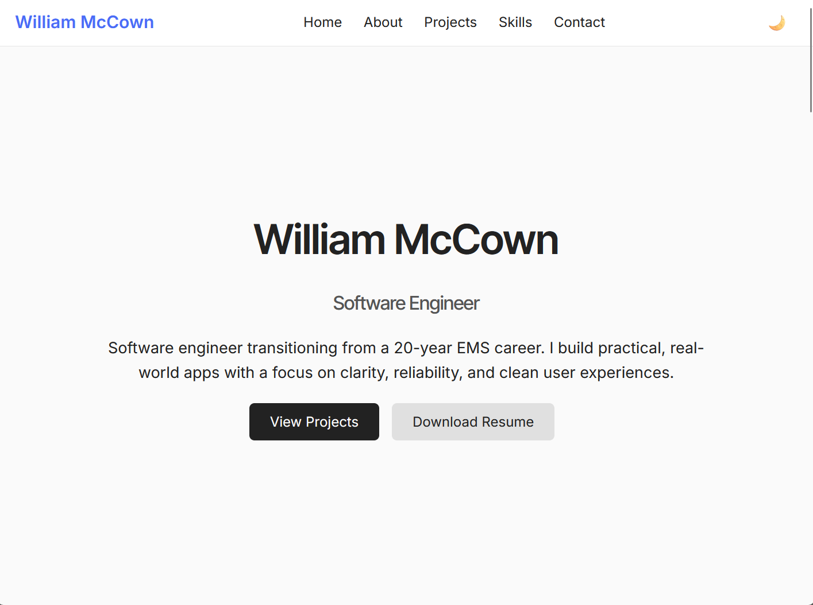

Software engineer transitioning from a 20-year EMS career. I build practical, real-world apps with a focus on clarity, reliability, and clean user experiences.
I’m a software engineer transitioning from a 20-year career in Fire/Rescue/EMS, where I worked as a paramedic and held leadership roles in training, safety, and protocol development.
I recently completed my BS in Computer Information Technology at Western Kentucky University, focusing on programming and software engineering. I enjoy building tools that track data, visualize trends, and help people make informed decisions.

A mobile app for logging seizure events, medications, and long-term patterns. Inspired by years of EMS experience and built with a focus on clarity, speed, and reliability.
Tech: React Native, Expo, SQLite

A fully responsive personal portfolio website designed to showcase my transition from EMS leadership into software engineering. Built with a focus on clean UI, modern layout structure, and practical features like dark/light theme auto-detection, smooth animations, and mobile-optimized navigation.
Tech: HTML5, CSS3, JavaScript, GitHub Pages
Email: wc.mccown@gmail.com
Phone: (606) 226-5931
Location: Van Lear, KY